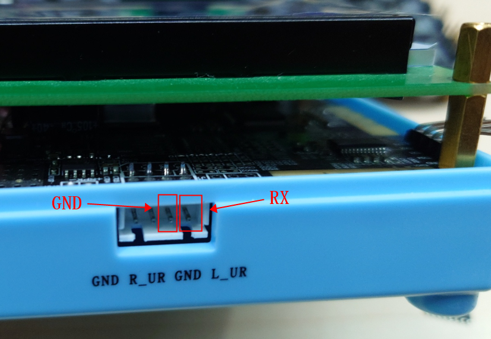
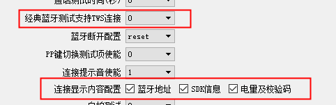
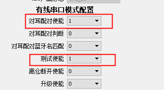

3.10. Test Box MES Log Output
So that customers can connect the Bluetooth test box to an MES system, the test box outputs LOG data over the serial port (UART).
3.10.1. Test box wiring
LOG output wiring: UART output baud rate: 460800
LOG output wiring in EDR connection mode

LOG output wiring with BLE test enabled

Important
1. EDR connection mode means that DIP switch 6 BLE test is not ON; only an EDR connection is made.
2. When DIP switch 6 BLE test is ON, only a BLE connection is made and only the Bluetooth address can be output; the frequency offset calibration value and RSSI are output only when DIP switch 4 Frequency offset test is ON
3.10.2. Enabling the settings
LOG output requires some settings to be enabled, as shown below:
MSE LOG output configuration (MSE LOG输出配置) must be set to 1

Classic Bluetooth test supports TWS connection (经典蓝牙测试支持tws连接) must be set to 0
To display the SDK version, check SDK version (sdk版本)
To display the battery level, check Battery level and checksum (电量及校验码)
To display the checksum, check Battery level and checksum (电量及校验码)

In UART mode, check Test mode (测试模式)
To display pairing information, check TWS pairing enable (对耳配对使能)

3.10.3. Protocol
The LOG is output according to a specific protocol, which makes it easy to connect to an MES system
|<------------- LEN --------------->|
+--+--+--+--+--+--+--+--+--+--+--+--+--+--+--+--+
|CRC16| LEN | MASK |L |T |V....|L |T |V....|
+--+--+--+--+--+--+--+--+--+--+--+--+--+--+--+--+
|<---------------- CRC16 ---------------->|
CRC16: the CRC16 value calculated over the command data, excluding the CRC16 itself
LEN: the length of MASK + LTV * N
MASK: data type flags; each BIT represents one data type:
Note
BIT |
Data type |
Description |
|---|---|---|
BIT0 |
0: left earbud; 1: right earbud |
The left/right earbud flag exists only in MASK |
When any of the following BITs is set to 1, data in LTV format is appended |
||
BIT1 |
Bluetooth address |
|
BIT2 |
SDK version |
Output when |
BIT3 |
CRC32 |
Output when |
BIT4 |
Battery level |
Output when |
BIT5 |
Pairing status |
Output when |
BIT6 |
Bluetooth address after pairing |
Output when |
BIT7 |
Frequency offset |
Output when a frequency offset test is performed in BLE test mode |
BIT8 |
RSSI |
Output when a frequency offset test is performed in BLE test mode |
BIT9 |
Frequency offset calibration structure |
Outputs a frequency offset calibration structure |
LTV :
Note
L: data length of V
T: data type:
No. |
Data type |
Description |
Length |
|---|---|---|---|
1 |
Bluetooth address |
6byte |
|
2 |
SDK version |
32byte |
|
3 |
CRC32 |
4byte |
|
4 |
Battery level |
Hex |
1byte |
5 |
Pairing status |
0: not paired; 1: paired |
1byte |
6 |
Bluetooth address after pairing |
6byte |
|
7 |
Frequency offset |
4byte |
|
8 |
RSSI |
4byte |
|
9 |
Frequency offset calibration structure |
4byte |
V: the data, whose length corresponds to type T
Example 1:
2F C0 0C 00 03 00 00 00 06 01 08 C5 EE 4B 0B 87
|CRC16| LEN | MASK |L |T | V |
|2F C0|0C 00|03 00 00 00|06|01|08 C5 EE 4B 0B 87|
Example 2:
CE 8A 42 00 7E 00 00 00 06 01 E9 FE 53 86 9A 52
20 02 18 03 3F 3F 3F 3F 2D 40 32 30 32 33 30 36
32 36 2D 24 38 35 65 63 31 00 00 00 00 00 00 00
00 00 04 03 13 E7 54 75 01 04 64 01 05 01 06 06
A0 E3 B1 6D 9A EB
|CRC16| LEN | MASK |L |T | V |
|CE 8A|42 00|7E 00 00 00|06|01|E9 FE 53 86 9A 52|
|L |T | V
|20|02|18 03 3F 3F 3F 3F 2D 40 32 30 32 33 30 36
V
32 36 2D 24 38 35 65 63 31 00 00 00 00 00 00 00
|L |T | V |L |T |V |L |T |V |L |T |
00 00|04|03|13 E7 54 75|01|04|64|01|05|01|06|06|
V |
A0 E3 B1 6D 9A EB|
Example 3: output of frequency offset and RSSI
19 50 18 00 83 01 00 00 06 01 8C 4C 80 7A A0 C2
04 07 1B 00 00 00 04 08 CD FF FF FF
|CRC16| LEN | MASK |L |T | V |
|19 50|18 00|83 01 00 00|06|01|8C 4C 80 7A A0 C2|
|L |T | V |L |T | V |
|04|07|1B 00 00 00|04|08|CD FF FF FF|